以下是 5 月 6 日发布的 SPX 30 分钟图表：
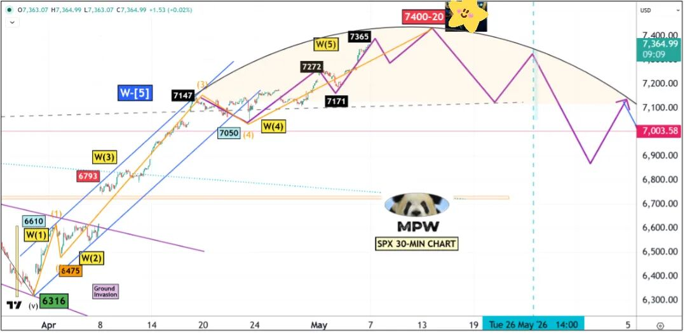
5 月 6 日发布的 SPX 30 分钟图表，标注 W-（5）目标位 7400-20，以及 5 月 26 日的关键时间窗口。
下方为更新后的 SPX 30 分钟图表：
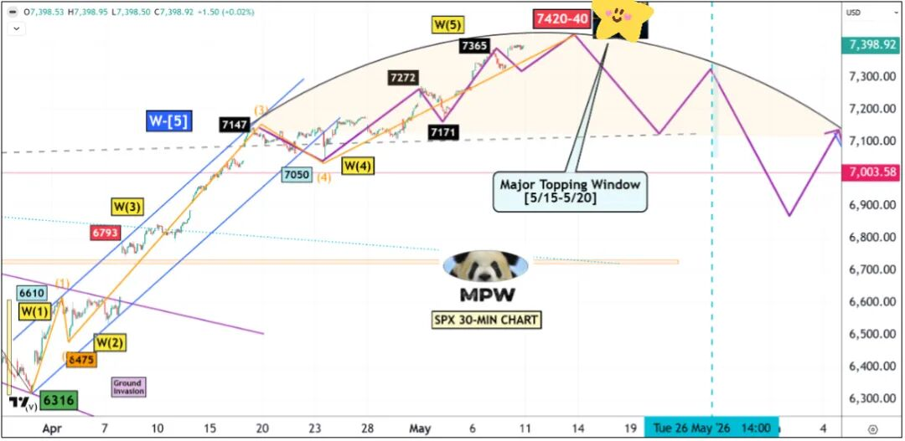
更新后的 SPX 30 分钟图，将 W-（5）顶部目标上修至 7420-40，并明确标注"主顶部窗口 5/15-5/20"。
主顶部窗口将于5月15日至20日开启：
（1）市场未经任何显著回撤便持续上探，仿佛指向不远处的某个关键日期。
（2）我的周期系统早已识别出 5 月 15 日至 20 日为主要顶部窗口，但与多数交易员一样，我低估了多头情绪背后那股喷薄而出的能量。
（3）周五，SPX 终于站上 7400——这一价位在数周前还被视为不可能；不过从整体结构看，仍可小幅延伸至 7420-40。
究竟发生了什么？
在 5 月 6 日发布的周中更新中，我曾写道：
过去数周我们所见证的行情，只有在忽略此前那些泡沫期的前提下才算"史无前例"——我指的是约二十年前（一代人之前），1999-2000 年和 2006-07 年的那两轮泡沫。（3）问题是涨到何时、涨到多高？我不得不再次抬高屋顶一层，至 7400-7420 区域。
我目前重点关注两张图：一是 $MAGS，二是 $DJI。简言之，除非这两者均创出历史新高，否则市场的多头动物精神尚未耗尽。截至今日收盘，二者距 ATH 仍有约 0.5%-1% 的距离。我给它们几个交易日去攻克。
正如预期，$MAGS 周四收于前高之上，满足了大型对角线形态的最低要求。
周五继续向上推进，正如我下文所言："看起来顶部不会在 3-4 个交易日内到达，正好落入我的顶部转折窗口。"
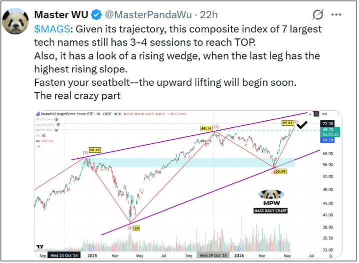
关于 $MAGS 的推文截图——七大科技股复合指数仍需 3-4 个交易日抵达顶部，呈上升楔形，最后一段斜率最陡峭。
同样契合见顶时间表的是，AAII 看空情绪指标已跌至 30 以下。
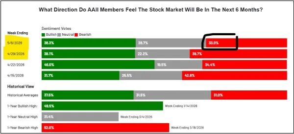
AAII 投资者情绪调查——5/6 当周看空情绪降至 33.0%，从前一周的 39.7% 显著回落。
接下来会怎样？
长期波浪计数的关键变更。
经过深入分析与计算，我必须放弃此前将下一个高点标注为本轮牛市顶部的波浪计数。
那是错误的，自 7350 被攻克之后，我便不得不重新审视长期视角。如今下方的波浪计数已成为我的主计数，并将指引我未来两年甚至更长时间的交易。
好消息是，修订后的波浪计数仍指向一次锐利的反转，并在 10/23 之前下行至 6000 区域。
但那仅仅是主级 W-[4] 平台型调整（蓝色）中的 W-A。
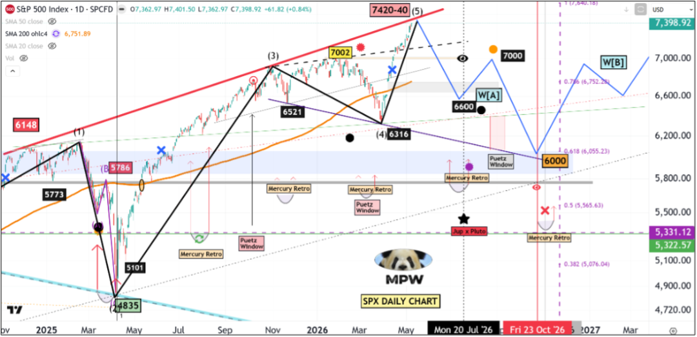
SPX 日线图，展示 W-（5）目标 7420-40 之后的回撤路径，先抵 W[A] 6600，再反弹至 W[B] 7000 区域，最终下探 6000 完成主级 W-[4] 中的 W-A。
下方的周线图清晰呈现了我新的波浪计数全貌，详细解读将在教育中心中展开。
简言之，当前的上行行情过于强势、过于推动浪化，根本不可能是终结浪——例如什么 5 浪中的 5 浪中的 5 浪。
其特征更接近 2018 年 1 月的顶部，那是一个主级第三浪的 5 浪。
是的，最终高点是 8600+！！
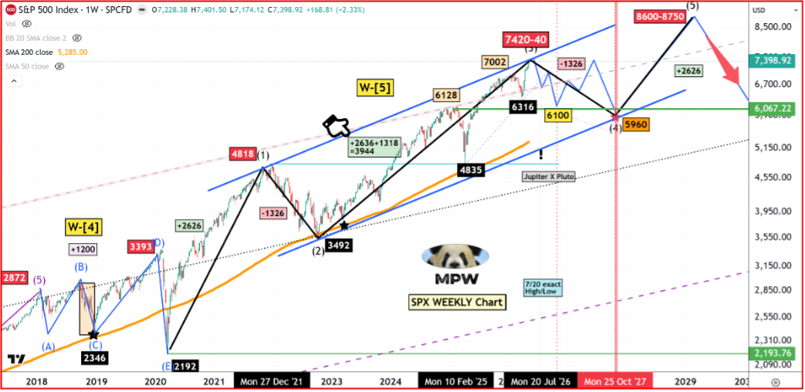
SPX 周线全景图，新的长期波浪计数——当前 7420-40 仅为 W-[5] 中的（3），后续将经 5960 完成（4），再向 8600-8750 推进真正的（5）顶部。
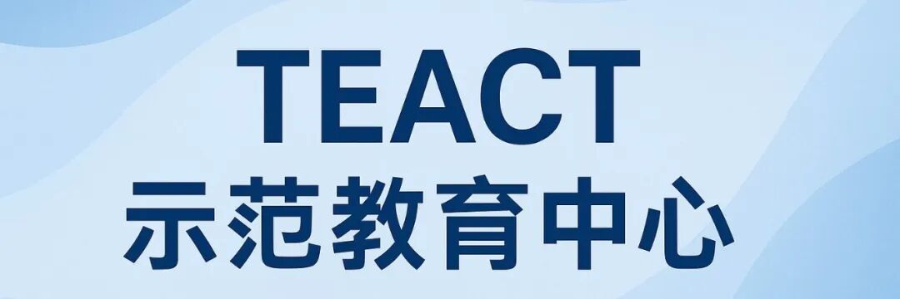
概率的游戏
交易，从其本质而言，乃是概率的游戏。所有交易员的问题在于，绝大多数人忍不住将其当作"确定性的游戏"来对待。这也是为何大多数人在最确信之时损失最惨重的根本原因。同理，在股票交易中翻来覆去（flip-flopping）应被视为一种美德，而非缺陷。
我对长期波浪计数所做的修改并非轻而易举或无足轻重之事，它意义重大、影响深远。
然而完成修订之后，我却感到如释重负、心境澄明，仿佛心头几根芒刺终于被拔除。
让我们先做一个对比——上周与本周我所呈现的长期视角。
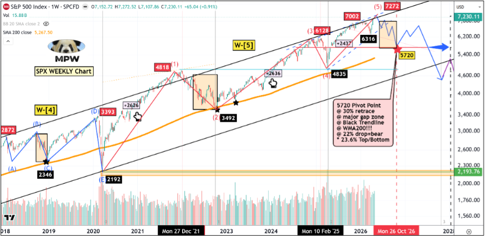
上周的 SPX 周线波浪计数版本——将 7272 标注为 W-（5）顶部，指向 5720 的关键支点（30% 回撤、主要缺口区、黑色趋势线、WMA200、22% 跌幅熊市）。
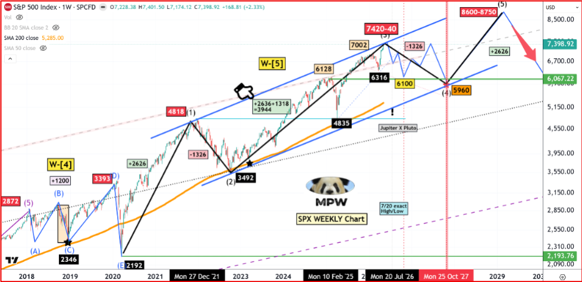
本周修订后的 SPX 周线波浪计数——当前高点仅为 W-[5] 中的（3），最终（5）顶将延伸至 8600-8750。
关键差异在于波浪的中段，即从 3492 低点至当前高点的部分。
依据当时的信息与结构，我曾认为市场正在走一个大型终结对角线，中间的第 3 浪略长但未延伸（3492-6128）。
而从关税低点 4835 至即将到来的顶点的"最终第 5 浪"，理应是这个丑陋终结对角线中"最短的"、也是最后一浪。
一旦 7350 被攻破，我的"大型终结对角线"理论便已失效或难以自圆其说——我曾试图用不同尺度来解释，但说服力不足；其中必有其他逻辑或缘由。
更令"终结对角线"理论难以为继的是：当前这一波垂直熔涨毫无对角线该有的样子——后者本应呈现强烈的之字形结构特征。
我清楚有什么不对劲——直到我意识到：从 3492 低点（2022 年 10 月）至即将到来的高点这一整段，本身就是一个大型 W-3。
刹那间一切豁然开朗——我是说，一切！！
请参阅下方放大的 SPX 周线图：
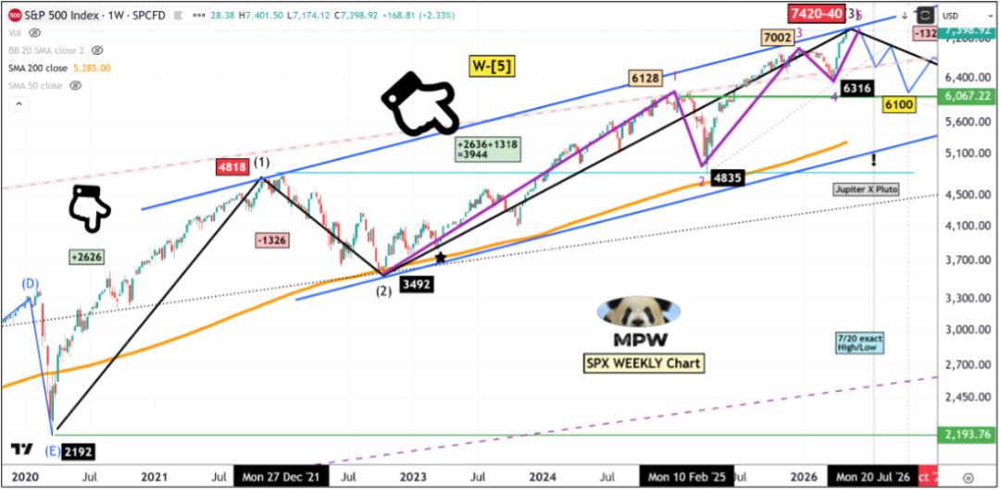
SPX 周线放大图，紫色 1-2-3-4-5 推动浪结构清晰可辨——延长的第 1 浪 3492-6128，第 3 浪约为延长 W-1 的 61.8%。
紫色 1-2-3-4-5 推动浪正是市场当前正在走的形态。
它拥有一个延长且拉长的第 1 浪（3492 至 6128），第 3 浪约为延长 W-1 的 61.8%。此外，紫色第 4 浪的低点（6316）并未触及第 1 浪的高点（6128）。
在 7400 处，正在演绎的 W-5 恰好为 W-3 的 38.2%。
还要留意那只大手指所指处
数字为 2636+1318=3944。
2636 是大级 W-[1] 的长度，即从 2192 低点至 4818 高点。
对 W-[3] 而言，正常的延伸区间为 W-1 的 150%-162%，即 3944-4220，意味着 W-[3] 的最终顶部将是 3492+3944=7436。
当然，顶部区间也可能高于 7700——可能性较低，但并非不可能。
抛物线行情：
依据新的波浪计数，许多疯狂、令人瞠目结舌的熔涨行情都能被轻而易举地解释——这正是主级第 3 浪的最终阶段（即主级第 3 浪中的第 5 浪，理应伴随着烟花绚烂与 FOMO 情绪）。
过去数十年间，曾有几个时期出现过同等量级的主级乃至主要级第 3 浪 5 浪推进。它们分别是：
（1）主级第 3 浪中的 5 浪——2017 年 10 月至 2018 年 1 月；
（2）主要级第 3 浪中的 5 浪——1999 年 7 月至 2000 年 3 月（QQQ）。
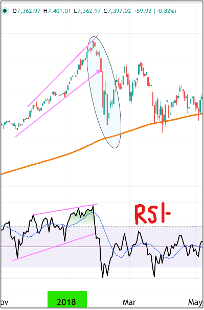
2017 年 10 月至 2018 年 1 月美股顶部——上行楔形 + RSI 顶背离的经典熔涨终结模式。
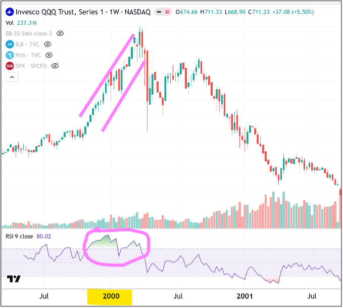
1999 年 7 月至 2000 年 3 月 QQQ 顶部——抛物线式拉升后骤然反转，RSI-9 高位钝化的科网泡沫终结现场。
从上方两张图（下方附 RSI-9 指标）中，可以清晰看出相似的模式：
令人窒息的熔涨式拉升
高位 RSI 数值（80 甚至 90 以上）
上行至顶部时无重大背离
顶部之后极为锐利的反转，抹去大部分涨幅，开启 W-4 整理。
事实上，那"锐利的反转"正是我预期即将到来的——大概率从下周开始，介于 5 月 15 日至 20 日之间——届时一轮新月将升起，中美双方将在特朗普重新当选后首次会面，背景则是霍尔木兹海峡的全球毁灭性局势。
更巧合的是，新任 FED 主席也将于 5 月 15 日上任——若你回顾过去 3-4 任新 FED 主席的早期任期，市场在最初阶段表现都不佳。
我也对几只主要个股（如 $TSLA）按新的长期波浪计数作了图，它们与大局完美契合。
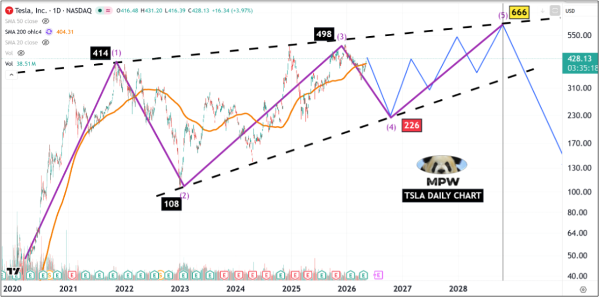
$TSLA 日线图，依新的波浪计数，2026 年初为（3）498，目前正构筑（4）226 回撤，最终（5）将冲击 666 后大幅反转。
作为一名偏空头的交易员，我多少有些失望——我等待数年的"大熊市"还要再潜伏 2-3 年。
话虽如此，即将到来的锐利反转将相当残酷地清洗掉这一新生代多头。
仅供参考：我每日将策略性空头账户资金的 10%-15% 配置于三个仓位——7/17 SPY 700 看跌期权、10/30 SPY 700 看跌期权以及 UVXY；按目前的节奏，我将于 5 月 15 日满仓做空。
免责声明：《波段市场研究报告》仅供具备独立决策能力的专业投资者进行学术与市场交流。文中所有推演与数据绝不构成任何买卖建议或“交易信号”。受监管限制，我们不提供具体操作推荐。初级投资者切勿在此寻找短期交易捷径，所有投资必须基于独立判断，风险自担。